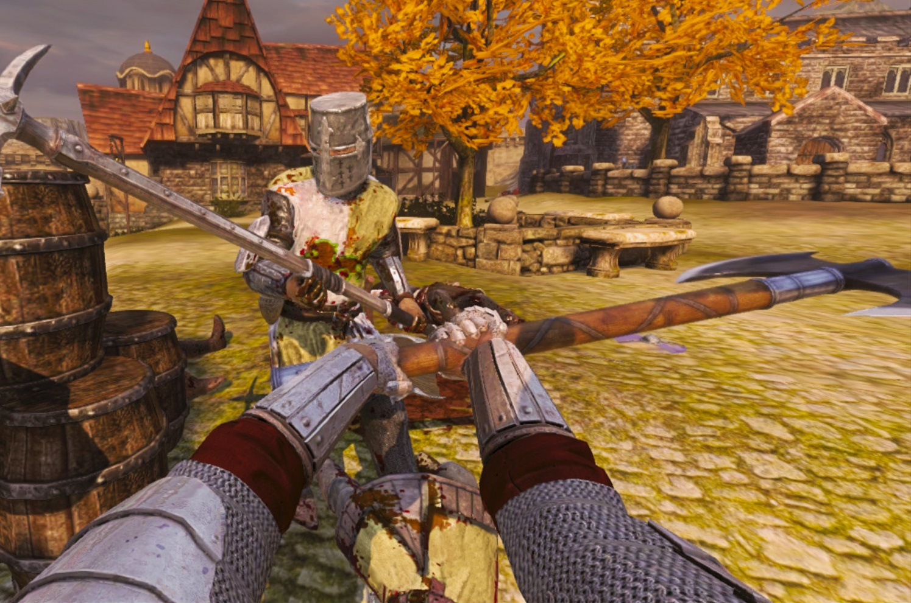

Kampfsystem
Schadensystem
Das Schadensystem basiert auf der Art der Rüstung und auf der Art der Waffe. Gut gepanzerte Einheiten erleiden mehr Schaden durch stumpfe Waffen als durch Klingenwaffen. Schlecht gepanzerte Einheiten jedoch erhalten mehr Schaden durch Klingenwaffen als durch stumpfe Waffen. Somit ist ein Morgenstern effektiver gegen einen Ritter als gegen einen Waffenknecht. Eine Klingenwaffe allerdings richtet am Waffenknecht mehr Schaden an als am Ritter.Somit sollten Ritter und Pikeniere mit stumpfen Waffen und Bogenschützen und Waffenknechte mit Klingenwaffen angegriffen werden, um den best möglichsten Schadenswert zu erzielen.
Waffen unterscheiden sich aber auch noch durch die Geschwindigkeit in welcher sie geschwungen werden können. Waffen wie ein Hammer werden langsam geschwungen, richten allerdings auch sehr viel Schaden an. Eine Fuchtel im Gegenteil wird sehr schnell geschwungen, richtet aber wenig Schaden an. Wie man sieht, werden starke Waffen langsam geschwungen und schwache Waffen schnell. Dies bewirkt, dass alle Waffen genau gleich gut sind.
Des weiteren Unterscheiden sich Waffen noch in der Reichweite. Speere haben eine eher große Reichweite, Dolche eine kleine.
Schwingen
 Der normale Angriff ist ein Schwung von rechts nach links. Durch erneuten Angriff wird die Waffe dann von links nach rechts geschwungen und schlussendlich noch einmal von rechts nach links. Dies ist allerdings nur mit verbleibender Ausdauer möglich. Ohne Ausdauer kann nur ein einfacher Schwung ausgeführt werden. Dies kann alles auch in die andere Richtung ausgeführt werden.
Der große Nachteil des Schwingens ist, dass es sehr viel Platz braucht und somit in engem Gelände unbrauchbar ist. Wenn die Waffe beim Angriff eine Wand berührt, braucht der Charakter eine kurze Zeit um sich zu erholen.
Angriff von oben
Als Alternative zum normalen Angriff gibt es auch noch einen Angriff von oben. Dies ist ein sehr starker Angriff, kann aber auch sehr gut abgewehrt werden. Ein Schlag von oben braucht sehr lange um ausgeführt zu werden, kann aber mit dem normalen Angriff kombiniert werden. Dies ist sehr praktisch, da der Angriff dadurch fließender und somit auch schneller erfolgt.
Stichangriff
Der Stichangriff ist eine weitere Art des Angriffes. Sie ist vor allem in engen Gängen eine gute Methode sich zu wehren. Der größte Vorteil allerdings ist, dass man mit einem Stichangriff am meisten Reichweite erzielt. Dadurch kann man den Gegner sehr gut von sich weghalten.
Der Stichangriff macht allerdings je nach Waffentyp unterschiedlich viel Schaden. Stumpfe Waffen eignen sich eher schlecht für einen Stichangriff. Speere hingegen eignen sich bestens für einen Stichangriff.
Blocken
Blocken ist eine der wichtigsten Fähigkeit des Spiels. Ohne Blocken wird man keine Chance haben.
Das Blocken kann durch ein Schild oder einfach durch eine Waffe erfolgen. Mit dem Schild kann man dauerhaft blocken, mit der Waffe nur kurz. Somit muss man mit der Waffe genau den richigen Zeitpunkt erwischen um zu blocken. Des weiteren kann ein Schild auch Pfeile abfangen.
Man kann zwar mit einem Schild das Blocken aufrecht erhalten, allerdings kann dies durch einen Fußtritt beendet werden. Somit ist es zu empfehlen nur zu blocken, wenn man gerade geschlagen wird.